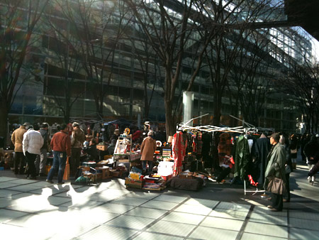
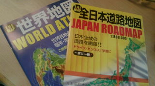

カテゴリ: かいもの
-
新春骨董市
正月最終日（？） 東京国際フォーラムまで自転車ちゃりちゃり出掛けて行って、骨董市を見に行ってきました。 さむうううううい！ パリの骨董市を彷彿する、西洋アンティークのお店もあれこれ。 でも、パリの…

-
iphone 3GSを飼いました
どういうわけか、長らくiphoneに見向きもしていなかったのだけど、 セカイカメラの発表で「あ！ほしい！」って思っちゃいました。えへ。 会社に端末があるので、しばらくいじくり倒させていただいてから、…

-
CMでみた！
家庭用カセットボンベで動く耕耘機。 いいなー。欲しいなー。 今は戦時中。芋をつくるべし！と、こないだ飲み会で力説してしまった。 でも、じゃがいも、サツマイモ、大根、タマネギって簡単にできるし、保存…

-
アニック・グタール
お仕事終わったご褒美に。アニック・グタール2つ買っちゃいましたー。えへー。 ローズアブソリュとガーデニアパッション。 バラとくちなし。乙女なお買い物。 天然香料のせいか、寝香水にしても心地良いかんじ…

-
よっしゃ！
お仕事をご一緒させていただいたデザイナーさんがいっつも良い香り。 さっきまで生花を抱きしめていたよーな、自然で美しい香り。 何度か打ち合わせをしているうちにむらむらと香水熱が… 教えてもらった天然香…

-
良い地図
久々に行ったダイソーで良いもの見つけたー。 地図！ 旅行代理店の前にずらーーーっと並んでいるパンフレットと同じくらいの大きさと薄さ。 くるくるっと丸めることもできるから、どこでも持っていけそう！ …

-
ウィローパターン
先月欲しいなーとつぶやいていたウィローパターン。 手に入れました。 カップ＆ソーサ。 娘が幽閉されていた楼閣 二人が逃げる小船 橋の上には追っ手の3人 そして鳥となり自由となった2人 デッドストッ…

-
カニかってきた
IKEAでカニ買って連れてかえってきました。 カニ990円。布団＆枕カバー1200円。やすい。 カバーはこまかな珊瑚(?)柄。日本のスーパーでは見かけない柄で嬉しい。 ピンクやブルーの淡ーい花柄とか…